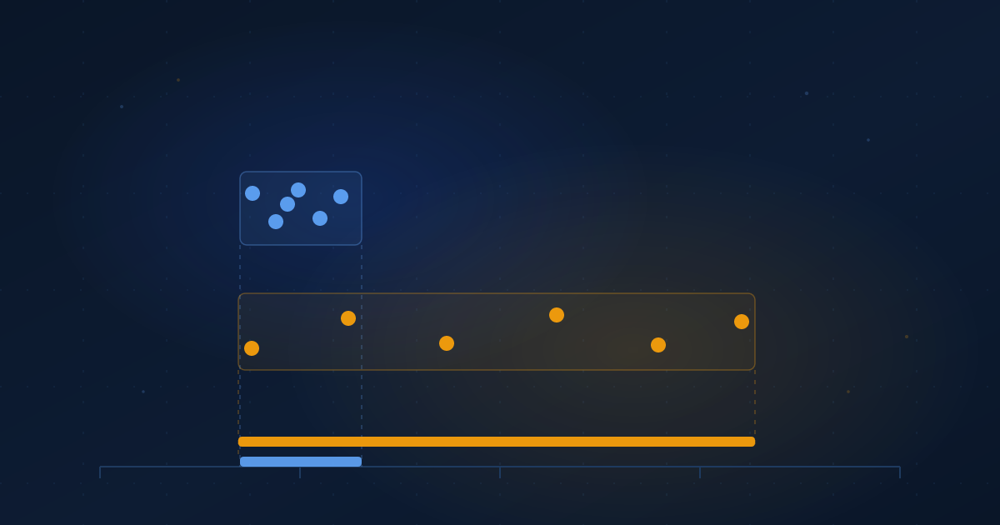

Routing Above the Model
Model routing optimizes the smaller variable. The harness around the model moves cost, and often capability, much further.
Ibrahim AbuAlhaol, PhD, P.Eng., SMIEEE
AI Technical Lead
Put six frontier models behind the same standardized scaffold, run them against SWE-bench Pro, and they finish within 4.9 points of each other. Hold one of those models fixed and change only the scaffold around it, and the spread widens to 9.5 points. Scale's own analysis of that leaderboard attributes swings of 10 to 20 points to harness choice alone.
Most routing infrastructure in production optimizes the first number.
The unit of routing is out of date
A model router accepts a request, scores it for difficulty or cost or domain, and picks a set of weights. That abstraction was correct when the thing behind the endpoint was one forward pass returning text. It is not what runs anymore. What runs is a loop: something that issues tool calls, reads and writes files, holds session state across turns, decides when the job is finished, and retries when a test fails. The model sits inside that loop as one component among several. The whole assembly is the harness.
Two products running identical weights are not running the same system. One may re-read the file it just edited before declaring success; the other may not. One may compact its context at 80% of the window; the other may truncate from the front and quietly lose the task description. Those are harness decisions, and they are invisible to any router that only knows the model name.
A model router asks which brain should answer the question. A harness router asks which workshop the job should go to. The workshop contains a brain. It also contains the tools, the bench, and the habit of checking the work before handing it back.
What the measurements actually say
The evidence splits cleanly, and the split is more useful than any single headline.
On cost, the case is settled. Vats and Golev ran two models through three open-source harnesses on a stratified slice of Terminal-Bench Pro and found up to a 40x difference in tokens per solved task. HarnessRouter's own comparison of eight harness and model configurations on a single task reports 223 credits against 0.47, and 4 minutes 36 seconds against 1 minute 25. That is a best-against-worst comparison, and the repository says so plainly, which is the right disclosure. The number to take from it is not 99.8%. It is that configurations which all complete the same task can differ in cost by two or three orders of magnitude.
On quality, the case is conditional. The same Terminal-Bench study found pass-rate differences of 0 to 8 points, with bootstrap confidence intervals covering zero for every comparison but one. Change the task family and the picture inverts: on HAL's SWE-bench Verified Mini, Claude Sonnet 4.5 resolved 68% of instances under one scaffold and 34% under another. Zhang and colleagues call the pattern the Binding Constraint Thesis, arguing that for long-horizon work among models of comparable capability, the harness matters more than the model does.
Both findings can hold at once. Short, well-specified terminal tasks give the harness little room to help or hurt, so accuracy converges while cost does not. Long-horizon repository work gives the harness many chances to lose the thread, and accuracy diverges.
Variance is an argument for routing, not for standardizing
The obvious response to harness variance is to find the best harness and adopt it. That works only if one harness dominates everywhere, and the measurements say it does not. HarnessRouter states plainly that the cheapest and fastest configurations vary by task. Vats and Golev found failure signatures attached to harnesses rather than to models: one scaffold reasons itself into a corner, another exhausts its turn limit during verification, a third idles until it times out. The same signatures appeared under both models they tested.
When the best option depends on the input, you have a routing problem by definition. Standardizing on one harness means accepting the worst case on every task family that harness handles badly, in exchange for not having to choose. That is a fair trade at low volume and an expensive one at scale.
The integration tax nobody benchmarks
There is a second efficiency argument that does not depend on any benchmark being correct.
Supporting a harness inside a product is not one integration. It is a set of infrastructure responsibilities repeated per harness, and HarnessRouter enumerates nine of them: deploy, sandbox, task and run, session, streaming, files, artifacts, recovery, traces. Four harnesses therefore cost 36 responsibilities and five cost 45. The work grows with the product of harnesses and responsibilities, and the second factor never shrinks on its own.
A shared contract collapses that product into a sum. You implement the nine responsibilities once against the protocol, and each additional harness costs an adapter instead of a column. HarnessRouter's Unified Harness Protocol takes this route. Its task surface is aligned with the OpenAI Responses API so existing SDKs and streaming parsers keep working, and it ships a conformance suite so the contract is testable rather than aspirational.
![Animated comparison of two integration topologies. Without a router, a product wires itself to nine infrastructure responsibilities (Deploy, Sandbox, Task and Run, Session, Streaming, Files, Artifacts, Recovery, Traces) for each harness, giving four harnesses times nine responsibilities equals 36, and five harnesses equals 45. With a router in between, the product keeps one API into a unified interface that fans out to Codex, Claude Code, Hermes, Pi and a DeepSeek harness, so the count stays at one product integration however many harnesses are attached.](../Post_Images/Fig_62_integration_comparison.gif)
What today's harness routers do not do
The current state deserves precision. HarnessRouter does not choose a harness for you. Routing is explicit, and the caller names the harness in the request body.
{
"model": "gpt-5.4-mini",
"input": "Redline this NDA against our standard terms.",
"metadata": { "harness_id": "hermes" }
}There is no scoring, no classifier, no cost-aware dispatch. What the project ships is a substrate: a uniform way to address many harnesses, per-session workspace isolation, secret handling that keeps credentials out of prompts, and a protocol that makes the set extensible. The policy that decides harness_id per request is yours to write.
That is an ordering rather than a gap. A routing policy is a function from your tasks to your configurations, and nobody outside your organization can fit it, because the inputs are your traffic and the labels are your outcomes. You need the substrate before the policy is expressible, and you need your own measurements before the policy is worth anything.
Where this leaves the model choice
Model selection does not stop mattering. Harness-Bench logged 5,194 trajectories across 106 sandboxed tasks and found the effect interactive rather than additive: a harness that suits one backend can suit another poorly, so the useful unit of comparison is the pair. A configuration is a model and a harness together, and a router that can vary only one of them is searching a line through a plane.
The broader shift is in how to read a vendor number. When a lab reports a benchmark score using its own scaffold, that score is a property of the pair. Anthropic's 69.2% for Opus 4.8 and the best Claude result of 51.9% on Scale's standardized board are not in conflict. They are measurements of two different systems that happen to share a model. Reading them as a model ranking is how teams end up routing on the smaller variable.
What leaders should do
- Record the harness and its version alongside the model in every trace you keep. If your logs name only the model, you cannot attribute a regression to a scaffold change, and you cannot fit a routing policy later.
- Measure cost per solved task rather than cost per token. The 40x spread only appears in that denominator, and a harness that burns more tokens but finishes on the first attempt is often the cheaper one.
- Adopt a harness contract before you integrate a third harness. The work is linear in harnesses and multiplied by concerns, so standardizing is cheapest while you still have two.
- Score two harnesses on a task set drawn from your own traffic before you commit to either. Public leaderboards rank the pairs somebody else assembled, on the tasks somebody else picked.
Related Articles
References & Extended Literature
- HarnessRouter, Community Edition and the Unified Harness Protocol (spec version 2026-09-12), Apache-2.0. github.com/HarnessRouter/harnessrouter
- Zhang, Y., Wang, J., Ge, Y., Xu, W., Hamm, J., & Reddy, C. K. (2026). Stop Comparing LLM Agents Without Disclosing the Harness. arXiv:2605.23950. arxiv.org/abs/2605.23950
- Vats, N., & Golev, O. (2026). The Scaffold Effect in Coding Agents: Harness Choice as a Hidden Variable in Coding-Agent Evaluation. arXiv:2607.22585. arxiv.org/abs/2607.22585
- Yao, Y., Tan, X., Liu, C.-H., et al. (2026). Harness-Bench: Measuring Harness Effects across Models in Realistic Agent Workflows. arXiv:2605.27922. arxiv.org/abs/2605.27922
- Scale AI. SWE-Bench Pro Leaderboard (public dataset), with harness and scaffold disclosure. labs.scale.com/leaderboard/swe_bench_pro_public